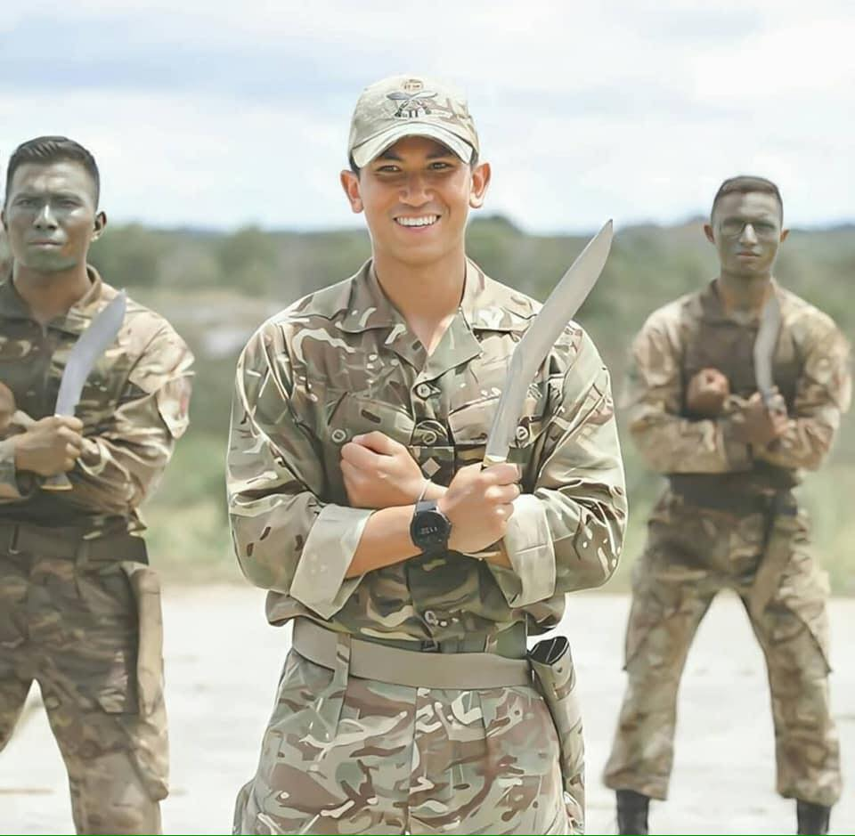
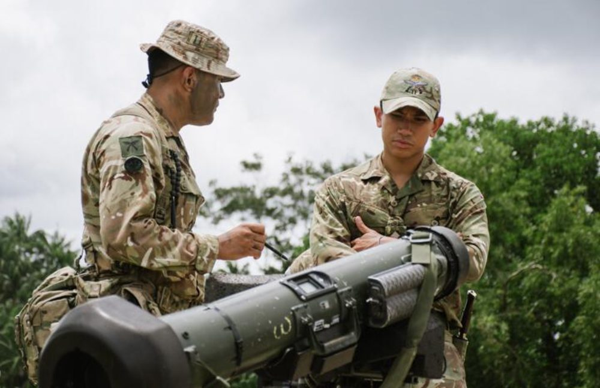
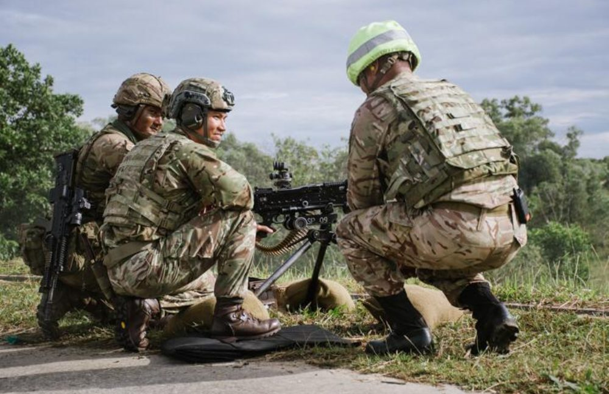
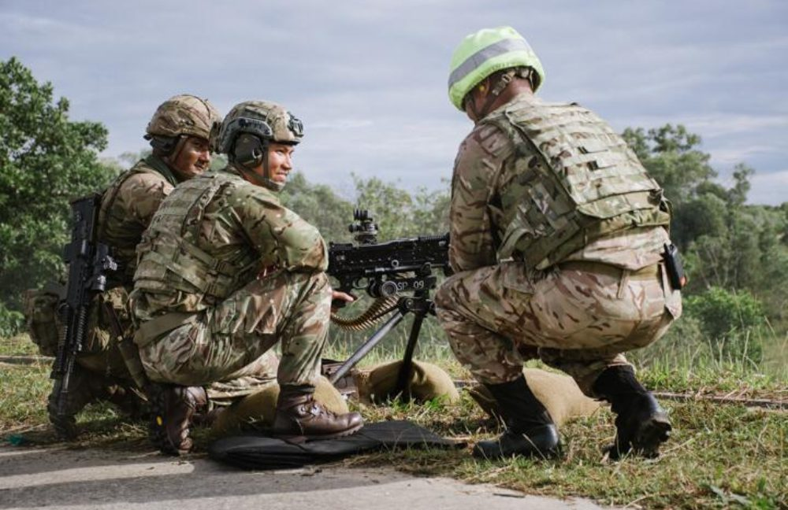

The Second Battalion, The Royal Gurkha Rifles (2 RGR)
had the pleasure of hosting His Royal Highness, Prince Mateen of Brueni, during a visit to B (Gallipoli) Company, 2 RGR’s recent exercise.
His visit was part of his ongoing military programme or relationship building and
demonstrates the strong ties between British Forces Brunei, The Royal Gurkha Rifles and the Royal Brunei Armed Forces.



